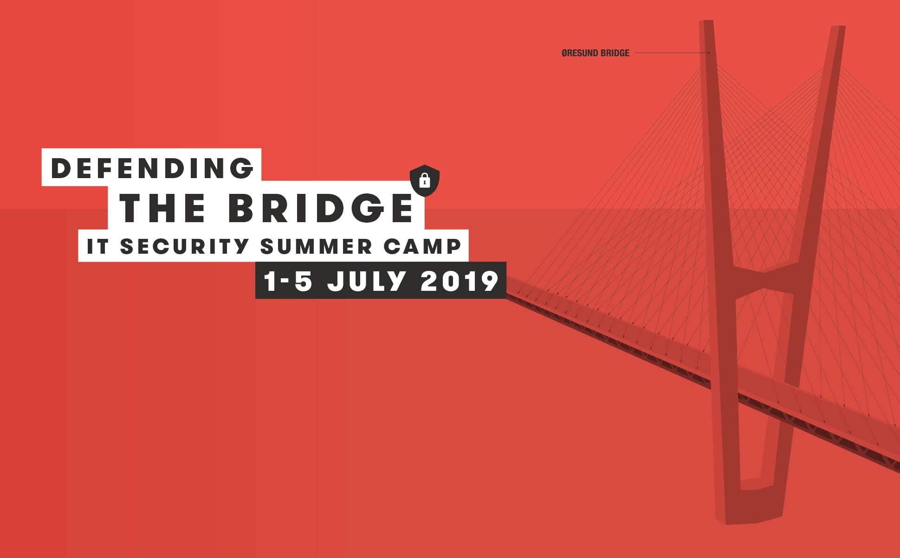

Copenhagen - Security summer camp
Introduction
During the first year, the University of Salford along with other universities from Europe such as University of Applied Science Amsterdam or HOWEST organised a summer security school which was held in Copenhagen. Although, the summer school was mostly for second years student that already did some modules on security, for the few passionate programmers from first year the offer was more than welcomed.
The schedule
Each day there were both morning and afternoon sessions on security that covered specific topics.
- Monday - Ethics and Privacy / Social Engineering
- Tuesday - PenTesting / communication security
- Wednesday - Malware and reverse engineering / Blockchain (afterward we had a boat trip, programmers need to relax right ?)
- Thursday -Capture the flag competition
- Friday -Capture the flag competition continued
During the morning session we usually had a lecture on the specific topic from that particular day and in the afternoon a workshop in order to put into practice what we learned. I really enjoyed the fact that there was not that much theory at all, everything was just practical stuff
Capture the flag competition and saving Copenhagen(wait what ?..)
As mentioned above in the schedule they gave us at the start of the week during the
last 2 days there was a capture the flag competition. Most of us expected a classic one: someone gives
you
a server or a website and you have to find the Flag(usually a word). BUT NO! The organizers of the
competition were a team of real hackers that participated almost every year in DEF CON (the biggest
hacking competition in the world) and they came up with a crazy idea.
We have to stop a terrorist attack that was going to take place during the next 24 hours in Copenhagen
using the information provided by them. When I say provided I mean that every team needed to have a person
that was going to interrogate one of the organizers in a separate room(like a real case scenario)
. What does that mean? Well, if you were not good enough in extracting information
then you would not know where to start...
Afterwards, you would have to do a lot of social engineering in order to find relevant information
about the profile of the terrorist, when he was planning to do the attack etc.
What happened next ?
Well, we saved Copenhagen! YEE! Well this is a very short summary of what happened in 24 hours. The teams had to go through a long process of applying all the skills leaned during the previous days in order to gather more and more details about the target. I do have to mention that we also had to go to a local bar and interrogate a person from the staff in order to get a certain piece of information( the organisers thought that it would be good to take a break from our screens).
What I learned?
My programming skills in terms of security were greatly improved in just one week. I leaned about topics such as Malware detection, Social Engineering or Penetration testing. However, the most important part was that I managed to better work in a team. As I said, the last two days were only about the coding competition and we had to work in teams. Working with people from other countries that you had never met before is tricky right ?